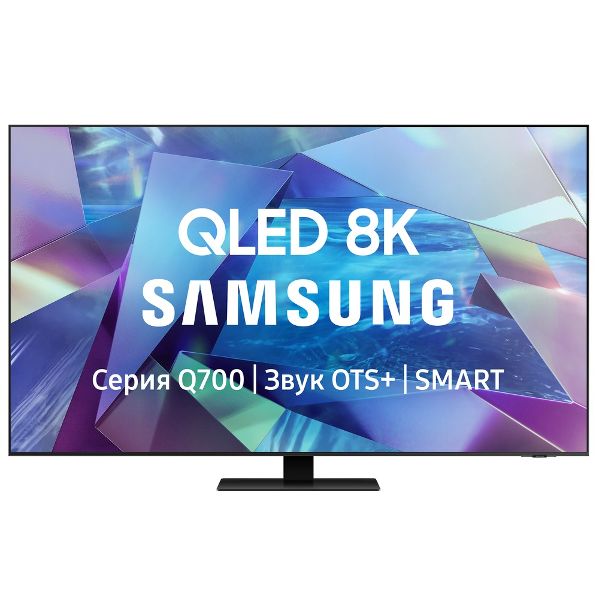

Телевизоры
Телевизор Samsung QE55Q700TAUXRU (2020)
Новый уровень реалистичности в 8К качестве.Квантовый процессор 8K. Адаптивный режим изображения.Технология Object Tracking Sound+. Удаленный доступ.Полная прямая подсветка 12х. Quantum HDR 8x.100% цветовой объем с технологией квантовых точек.
Характеристики товара
- Тип QLED
- Диагональ 55″ (140 см)
- Разрешение 8K UHD
- Разрешение, пикс 7680×4320
- Технология затемнения Ultra Black
Подробное описание товара
Прочувствуйте силу каждой сцены с невероятным разрешением 33 миллиона пикселей, потрясающей четкостью изображения и разрешением в 4 раза выше, чем UHD 4К.
Процессор Quantum 8K способен улучшать изображение низкого качества до разрешения 8К.
Интеллектуальные способности Quantum 8K позволяют масштабировать контент до уровня 8К благодаря машинному обучению.
ЦЕНА 179 990 ₽